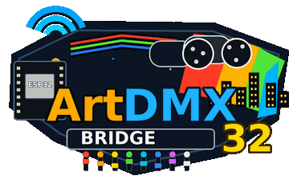

artdmx-bridge32 wandelt über WiFi empfangene Art-Net-Lichtsteuerdaten in DMX512-Ausgabe für professionelle Lichtsteuerung um. Es ist für Festinstallationen, mobile Setups und Prüfaufbauten vorgesehen, bei denen Art-Net die primäre Steuerquelle ist.
artdmx-bridge32 ist ein ESP32-basiertes Gateway, das:
| Funktion | Beschreibung |
|---|---|
| Web-Dashboard | Live-Status, Traffic-Anzeigen, laufendes Log, Setup- und Testmodus-Banner |
| Web-Konfiguration | WiFi, Hostname, Art-Net, DMX-Timing, Debug-Logging, Werkseinstellungen; englische oder deutsche Oberfläche auf der Konfigurationsseite |
| Konfigurationssicherung | Herunterladen/Hochladen editierbarer artdmx-bridge32.conf-Textdateien |
| DMX-Testseite | 16 manuelle Slider; Art-Net wird ignoriert, solange der Testmodus aktiv ist |
| mDNS | Zugriff über http://<hostname>.local |
| Setup-Access-Point | Automatischer AP, wenn die WiFi-Verbindung innerhalb von 5 Sekunden fehlschlägt |
| ArduinoOTA | Drahtlose Firmware-Updates aus der Arduino IDE |
| Komponente | Spezifikation |
|---|---|
| Controller | ESP32-Modul (z. B. ESP32-WROOM-32, ESP32-WROOM-DA) |
| RS-485 | MAX485 oder kompatibel — einer für DMX1, optional ein zweiter für Port 2 |
| LEDs (optional) | GPIO 13, 14, 22 mit Vorwiderständen (330 Ω–1 kΩ) |
| Reset-Eingang (optional) | GPIO 15 nach GND, 3 s halten für Werkseinstellungen |
| Stromversorgung | Stabile 3,3 V / 5 V gemäß Spezifikation deines ESP32-Boards |
| Element | Anforderung |
|---|---|
| WiFi-Netzwerk | 2,4 GHz WPA/WPA2 (oder offener AP für die Ersteinrichtung) |
| Lichtsoftware | Art-Net-Sender (Universum muss zur Gerätekonfiguration passen) |
| Webbrowser | Moderner Browser für Dashboard und Konfiguration |
| Arduino IDE (OTA) | Für drahtlose Firmware-Updates; ESP32-Boardpaket 2.x oder 3.x |
| Parameter | Werkseinstellung |
|---|---|
| Hostname | artdmx-bridge32 |
| Art-Net-Universum | 0 |
| Art-Net-Timeout | 15000 ms |
| DMX-Refresh-Intervall | 30 ms |
| DMX-Paketgröße | Volle 512-Kanal-Pakete aktiviert |
| DMX2-Ausgang | Deaktiviert |
| Kabelgebundener DMX1-Eingang | Deaktiviert |
| Kanalfilter | Kanäle 1–512 |
| Serieller Monitor | 115200 Baud |
| Oberflächensprache (Konfiguration) | Automatisch (Browser) |
| ESP32 GPIO | MAX485-Pin | Funktion |
|---|---|---|
| GPIO 17 | DI | UART TX → DMX-Daten |
| GPIO 16 | RO | UART RX |
| GPIO 4 | DE + /RE | Treiberfreigabe (DE und /RE gemeinsam verbinden) |
| GND | GND | Gemeinsame Masse |
| — | A / B | DMX+ / DMX− zu den Geräten |
| ESP32 GPIO | MAX485-Pin | Funktion |
|---|---|---|
| GPIO 19 | DI | TX für DMX2-Ausgang |
| GPIO 18 | RO | RX für kabelgebundenen DMX1-Eingang |
| GPIO 21 | DE + /RE | Treiberfreigabe |
| GND | GND | Gemeinsame Masse |
| — | A / B | DMX+ / DMX− Leitung |
| GPIO | Funktion |
|---|---|
| GPIO 13 | DMX1-Ausgangsaktivität (~150 ms Blitz pro Paket) |
| GPIO 14 | DMX2-Ausgangs- oder DMX1-Eingangsaktivität |
| GPIO 22 | WiFi- / OTA- / DMX-Teststatus (siehe Abschnitt 12) |
| GPIO 15 | Werkseinstellungen — 3 Sekunden LOW halten |
esp_dmx 4.x, ArtnetWifi).secrets.h.example nach secrets.h kopieren und Standard-WiFi- sowie OTA-Zugangsdaten eintragen.artdmx-bridge32.ino in der Arduino IDE öffnen, Board und Port auswählen und hochladen.esp_dmx-Bibliothekspatch für Kompilierung und kabelgebundenen DMX1-Eingang nötig sein — siehe Projekt-README.Seriellen Monitor mit 115200 Baud öffnen. Ein erfolgreicher Start zeigt:
artdmx-bridge32 2.3.0-web-dmx starting...
Copyright (C) 2026 Richard Smetana
Licensed under GNU GPL v3 or later
DMX test mode off (default after boot)
Das Gerät verwendet WiFi-Zugangsdaten aus NVS (nach dem ersten Speichern über das Webinterface) oder beim ersten Start aus secrets.h. Wenn die Verbindung innerhalb von 5 Sekunden fehlschlägt, startet ein Setup-Access-Point:
| Element | Wert |
|---|---|
| Setup-SSID | <hostname>-setup (Standard: artdmx-bridge32-setup) |
| Weboberfläche | Gateway-IP aus dem seriellen Log und dem Dashboard-Banner |
Computer oder Telefon mit der Setup-SSID verbinden, Geräte-IP im Browser öffnen und auf der Seite Configuration die WiFi-Zugangsdaten eingeben. Bei Hinweis speichern und neu starten.
| Methode | URL / Adresse | Verwendung |
|---|---|---|
| mDNS | http://<hostname>.local | Normalbetrieb im LAN (Standard: http://artdmx-bridge32.local) |
| IP-Adresse | http://<device-ip> | Wenn mDNS nicht verfügbar ist |
| Setup-AP | Gateway-IP aus dem seriellen Log | Wenn WiFi nicht konfiguriert oder nicht erreichbar ist |
Der konfigurierte Hostname wird als DHCP-Clientname an den Router gesendet. Er sollte in der Clientliste des Routers als artdmx-bridge32 (oder dein eigener Name) erscheinen, nicht als esp32-XXXXXX. Hostname auf der Konfigurationsseite ändern und neu starten, wenn dein Router alte Leases zwischenspeichert.
Die Firmware verbindet automatisch neu, wenn die Verbindung verloren geht. Die Verbindung wird alle 2 Sekunden geprüft (gültige IP und AP-Zuordnung). Die Status-LED blinkt einfach, während die Verbindung aufgebaut wird.
Wenn auf der Konfigurationsseite ein Web-Passwort gesetzt ist, benötigen alle Webseiten HTTP-Basic-Authentifizierung:
| Feld | Wert |
|---|---|
| Benutzername | Geräte-Hostname (Standard: artdmx-bridge32) |
| Passwort | Web-Passwort aus der Konfiguration |
Web-Passwort leer lassen, um die Authentifizierung zu deaktivieren. WiFi- und OTA-Passwörter sind getrennt.
Alle Seiten enthalten eine Navigationsleiste (Dashboard · Config · DMX Test), Logo, Hostname-Kopfzeile und eine Fußzeile mit Copyright und GPL-Lizenzlink.
/)Aktualisiert sich alle 500 ms.
| Bereich | Beschreibung |
|---|---|
| Setup-Banner | Orangefarbenes Banner im AP-Modus mit Setup-SSID und URL |
| DMX-Test-Banner | Violettes Banner, wenn der DMX-Testmodus aktiv ist |
| DMX-Traffic | Webanzeigen für DMX1 out, DMX2 out, DMX1 in — etwa 2 s nach dem letzten Paket aktiv |
| Statusraster | Hostname, URL, IP, RSSI, Laufzeit, Heap, OTA, Art-Net, DMX-Test, Universum, Refresh, Port-Modi, Filter |
| Serielles Log | Letzte 32 Logzeilen; automatisches Scrollen, außer du scrollst nach oben |
/config)Die Konfigurationsseite unterstützt Beschriftungen auf Englisch und Deutsch. Unter Gerät die Oberflächensprache wählen: Automatisch (Browsersprache), Englisch oder Deutsch. Gilt nur für diese Seite; Dashboard und DMX-Test bleiben auf Englisch. Zum Speichern im Flash Speichern verwenden.
| Schaltfläche / Aktion | Beschreibung |
|---|---|
| Save | Einstellungen in den Flashspeicher schreiben |
| Save and Reboot | Einstellungen speichern und Gerät neu starten |
| Reboot | Neustart ohne Speichern von Änderungen |
| Download .conf | Alle Einstellungen als Textdatei exportieren |
| Upload / Upload and Reboot | Einstellungen aus Datei oder eingefügtem Text importieren |
| Factory reset | Alle Einstellungen löschen (Bestätigung erforderlich) |
/dmx-test)Vollständige Dokumentation des DMX-Testmodus siehe Abschnitt 9.
Einstellungen werden in NVS im Namespace artdmx-bridge32 gespeichert. Nach dem ersten Speichern über das Webinterface bleiben Werte über Neustarts hinweg erhalten.
| Einstellung | Standard | Hinweise |
|---|---|---|
| WiFi SSID / Passwort | Aus secrets.h | Neustart nach Änderung empfohlen |
| Oberflächensprache | Automatisch | UI der Konfigurationsseite: 0 = automatisch, 1 = Englisch, 2 = Deutsch (ui_lang in .conf) |
| Hostname | artdmx-bridge32 | mDNS, OTA, DHCP-Name, Web-Benutzername (max. 31 Zeichen) |
| Web-Passwort | (leer) | Aktiviert HTTP-Basic-Auth, wenn gesetzt |
| OTA-Passwort | Aus secrets.h | Leer = OTA ohne Passwort |
| Art-Net-Universum | 0 | Muss mit der Lichtsoftware übereinstimmen |
| Art-Net-Timeout | 15000 ms | Inaktive Zeit bis zum kabelgebundenen Eingangs-Fallback |
| DMX-Refresh-Intervall | 30 ms | Wiederholrate für Hold-Dimmer |
| Volles 512-Kanal-Paket senden | Ein | Aus sendet nur den aktiven Kanalbereich |
| DMX2-Ausgang aktivieren | Aus | Gefilterter Art-Net-Spiegel auf Port 2; Neustart erforderlich |
| Kabelgebundenen DMX1-Eingang aktivieren | Aus | Deaktiviert DMX2; nutzt Port 2 als Eingang; Neustart erforderlich |
| Kanalfilter Start / Ende | 1 / 512 | Kanalbereich für Port 2 — siehe Abschnitt 11 |
| Art-Net-Konsolenlog | Aus | Aus / passend / ignoriert / alle Universen |
| Debug-Log Kanal Start / Ende | 1 / 4 | Kanäle, die in Logzeilen angezeigt werden |
| Jedes N-te Paket loggen | 1 | Logmenge reduzieren (z. B. 10, 100) |
| Nur bei Wertänderung loggen | Aus | Identische aufeinanderfolgende Frames überspringen |
Die DMX-Testseite ermöglicht die manuelle Steuerung von DMX1 für Prüfaufbauten und Inbetriebnahme.
| Bedienelement | Beschreibung |
|---|---|
| DMX test mode | Wenn aktiviert, wird Art-Net ignoriert und die Sliderwerte steuern DMX1. Das Dashboard zeigt ein violettes Banner. Die GPIO-22-Status-LED atmet. |
| Send DMX only when slider moved | Standard EIN — DMX wird nur gesendet, wenn ein Slider bewegt wird. AUS = kontinuierlicher Refresh im konfigurierten Intervall. |
| Update sliders from Art-Net | Wenn der Testmodus AUS ist, werden eingehende Art-Net-Werte auf den Seitenslidern gespiegelt (nur Anzeige, 500-ms-Abfrage). |
| Start channel | Erster von 16 aufeinanderfolgenden Kanälen (1–497) |
| 16 Slider | Bereich 0–255; werden beim Öffnen der Seite aus dem letzten Art-Net-Frame geladen |
| Pufferanzeigen | Ansicht des Sliderbereichs und vollständiger 512-Kanal-Puffer; Refresh-Schaltfläche aktualisiert den vollständigen Dump |
Alle dauerhaften Einstellungen können als Klartextdatei artdmx-bridge32.conf exportiert und importiert werden.
Konfigurationsseite → Download .conf, oder GET /api/config/download.
Datei auswählen oder Text einfügen → Upload oder Upload and Reboot.
key=value# beginnen, sind Kommentaretrue oder falsewifi_pass="my secret"ui_lang — wenn weggelassen, bleibt die aktuelle Sprache erhalten)Der Kanalfilter gilt für den DMX2-Ausgang und den kabelgebundenen DMX1-Eingang an Port 2.
Typische Verwendung: Moderne Geräte an DMX1; ältere, flackeranfällige Geräte an DMX2 mit engem Filterbereich (z. B. Kanäle 31–63).
Wenn Art-Net länger als das Timeout inaktiv ist, wird kabelgebundenes DMX an Port 2 gelesen. Nur Kanäle innerhalb des Filterbereichs werden an den DMX1-Ausgang weitergegeben.
| Muster | Bedeutung |
|---|---|
| Dauerhaft ein | WiFi verbunden |
| Einfaches Blinken | WiFi-Verbindung wird aufgebaut |
| Doppelblinken | Setup-Access-Point aktiv |
| Dreifachblinken | OTA-Firmware-Update läuft |
| Atmen (PWM-Fade) | DMX-Testmodus aktiv |
Blinken bei jedem DMX-Paket ungefähr 150 ms. Während OTA deaktiviert. Die Traffic-Punkte im Web-Dashboard folgen Paketen für etwa 2 Sekunden (reine Refresh-Zyklen aktivieren sie nicht).
Der Kurzname des Geräts in Art-Net folgt dem konfigurierten Hostnamen.
artdmx-bridge32 at ...).Während OTA: DMX-Ausgänge senden zuerst Blackout, Art-Net stoppt, GPIO-13/14-Traffic-LEDs aus, GPIO 22 blinkt dreifach bis zum Abschluss.
| Methode | Vorgehensweise |
|---|---|
| Web UI | Configuration → Danger zone → Factory reset → bestätigen |
| GPIO 15 | Pin 3 Sekunden LOW nach GND halten |
Löscht alle NVS-Einstellungen und startet mit den Standardwerten aus config.h und secrets.h neu. Einstellungen des DMX-Testmodus werden unabhängig davon bei jedem Start zurückgesetzt.
USB-Serial mit 115200 Baud verbinden. Das Log entspricht dem Dashboard (WiFi-Ereignisse, Konfigurationsänderungen, Art-Net-Debug, OTA, DMX-Test ein/aus). Der OTA-Fortschritt in Prozent erscheint nur auf Serial.
Art-Net-Konsolenlogging auf der Konfigurationsseite aktivieren, um Universen und Kanalwerte zu debuggen. Log every Nth packet und Log only on value change verwenden, um die Logmenge zu steuern.
| Symptom | Empfohlene Maßnahme |
|---|---|
| Keine DMX-Ausgabe | Verdrahtung, DE-Pin, Art-Net-Universum, Sender-IP/Subnetz prüfen |
| Weboberfläche nicht erreichbar | Geräte-IP versuchen; Setup-AP verbinden; Web-Passwort prüfen |
| Router zeigt esp32-XXXXXX | Hostname setzen, neu starten, DHCP-Lease erneuern |
| DMX2 aktualisiert nie | DMX2-Ausgang aktivieren; Filterbereich prüfen; nur Änderungen im Bereich lösen Senden aus |
| Ältere Geräte flackern an DMX2 | Kanalfilter enger setzen; DMX2 sendet nur bei Änderung |
| Kabelgebundener Eingang wird ignoriert | DMX1-Eingang aktivieren, neu starten, Art-Net-Timeout abwarten |
| Traffic-Punkte bleiben Idle | Universum prüfen; Punkte folgen Paketen, nicht reinen Refresh-Zyklen |
| Konfigurations-Upload abgelehnt | Fehlermeldung lesen; Syntax und erforderliche Schlüssel korrigieren |
| DMX-Test hängt auf aktiv | Neustarten — Testmodus ist nicht persistent |
| OTA schlägt fehl | Gleiches Netzwerk; korrektes OTA-Passwort |
| Kompilierfehler uart.c | esp_dmx-Patch für ESP32 Core 3.3.x anwenden (siehe README) |
| Reboot-Schleife mit DMX-Eingang | esp_dmx-UART2-Kontextfix anwenden |
| Element | Wert |
|---|---|
| Produktname | artdmx-bridge32 |
| Firmware-Version | 2.3.0-web-dmx |
| Handbuchrevision | 1.1 — Juni 2026 |
| Copyright | © 2026 Richard Smetana |
| Lizenz | GNU General Public License v3 or later (siehe LICENSE) |
| SPDX-Identifier | GPL-3.0-or-later |
| Konfigurations-Namespace | artdmx-bridge32 (NVS) |
| Standard-Hostname | artdmx-bridge32 |
| Standard-Web-URL | http://artdmx-bridge32.local |
| Setup-AP-SSID | artdmx-bridge32-setup |
| Serielle Baudrate | 115200 |
Entwicklerdokumentation, Bibliothekspatches, API-Details und Quellcode-Struktur sind in der mit dem Firmware-Quellcode gelieferten Projektdatei README.md beschrieben.
Diese Firmware ist freie Software und steht unter der GNU General Public License Version 3 (oder später). Du darfst sie gemäß den Bedingungen der GPL weitergeben und verändern. Der vollständige Lizenztext befindet sich in der Datei LICENSE, die mit dem Quellcode geliefert wird. Es gibt keine Gewährleistung.
Quelldateien sind mit SPDX-License-Identifier: GPL-3.0-or-later gekennzeichnet. Wenn du veränderte Firmware weitergibst, musst du den zugehörigen Quellcode bereitstellen und deine Änderungen dokumentieren, wie es die GPL verlangt.